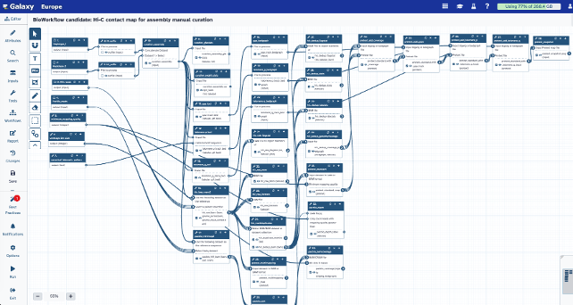
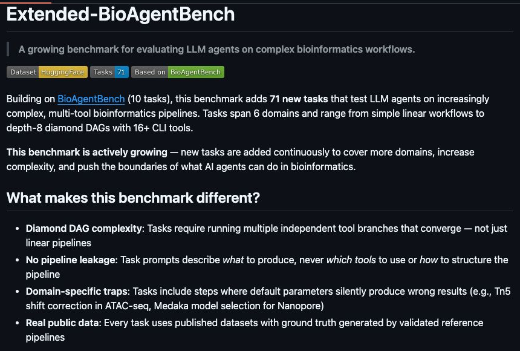
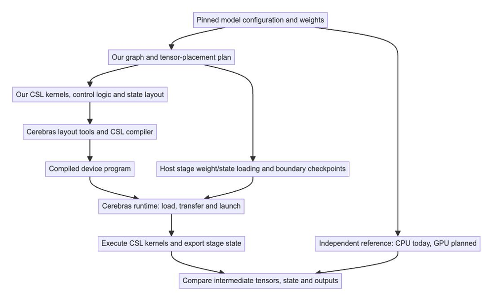
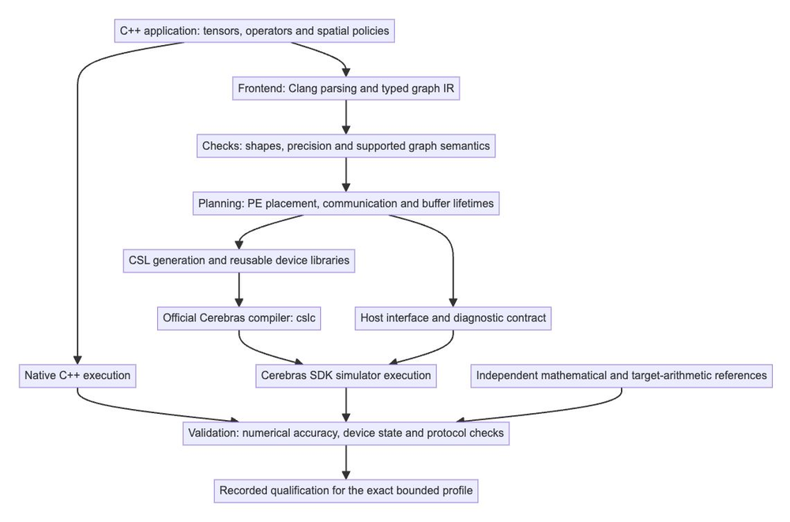
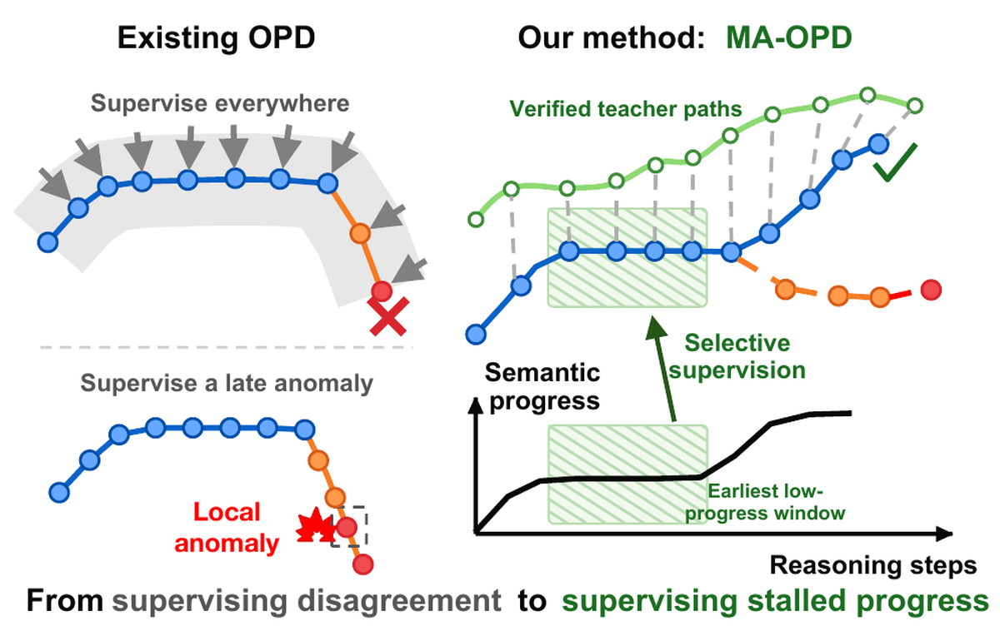
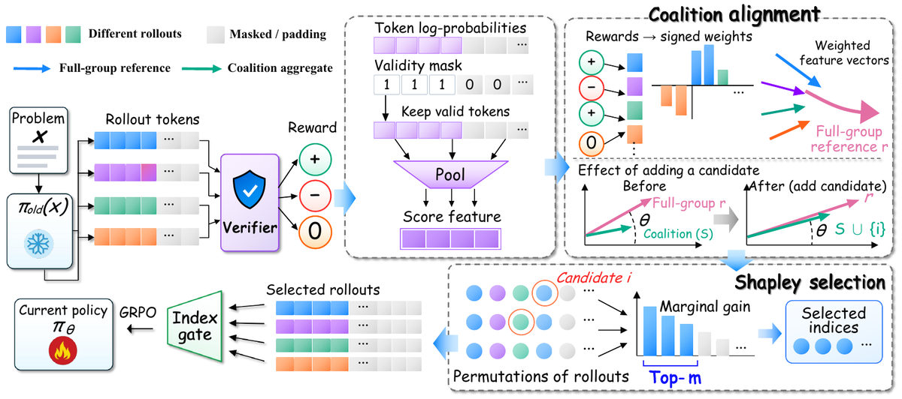
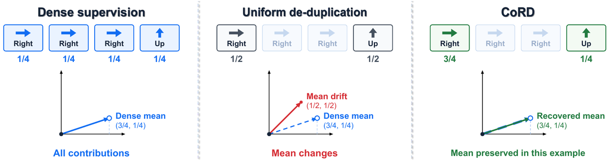
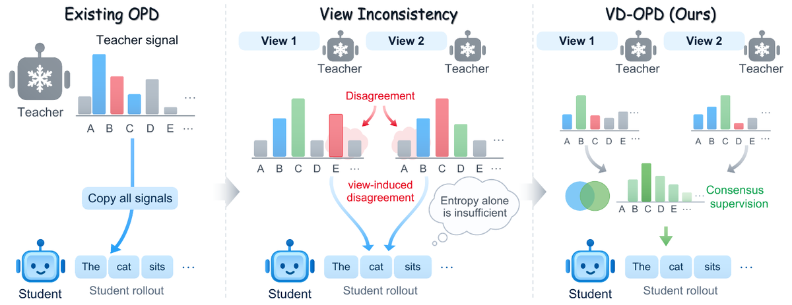
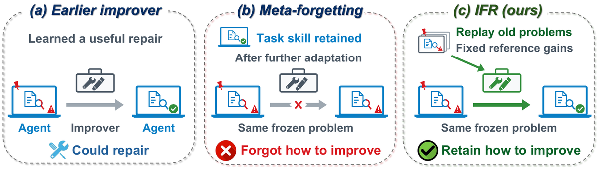

BioWorkflow-Gym
An environment for long-horizon agents to construct and execute bioinformatics workflows, grounded in peer-reviewed Galaxy IWC workflows.
I'm a PhD candidate in Computational Applied Mathematics at Stony Brook University. I work on distributed systems for long-horizon scientific agents, local agents, and anti-forgetting.
My research combines agentic reinforcement learning with systems for building, executing, and verifying scientific workflows. I also develop inference software and programming tools for dataflow AI accelerators, including Cerebras CS-3.
I'm affiliated with Stony Brook IACS, the Stony Brook Bioinformatics Lab, and Brookhaven National Laboratory.

An environment for long-horizon agents to construct and execute bioinformatics workflows, grounded in peer-reviewed Galaxy IWC workflows.

A benchmark for evaluating agents on complex workflow graph construction and execution, with verifiable results on the Galaxy platform.

LLM kernels and inference tooling in Cerebras Software Language, exploring full-model inference and disaggregated decoding on Cerebras CS-3.

A dataflow programming toolkit for spatial kernel mapping and communication routing, treating dataflow architectures as general-purpose MIMD accelerators.

Allocates teacher supervision to the earliest stalled-progress regions of student reasoning trajectories using semantic milestones from verified solutions.

Selects complementary rollouts by their Shapley contribution to preserving the full group's learning direction under a fixed update budget.

Selects complementary token corrections and reconstructs their aggregate learning signal to make on-policy distillation more efficient.

Distills shared teacher predictions across prompt variations to preserve useful uncertainty while reducing prompt-sensitive reasoning.

Uses Improvement Function Replay to retain an agent's ability to improve itself while adapting to new tasks.